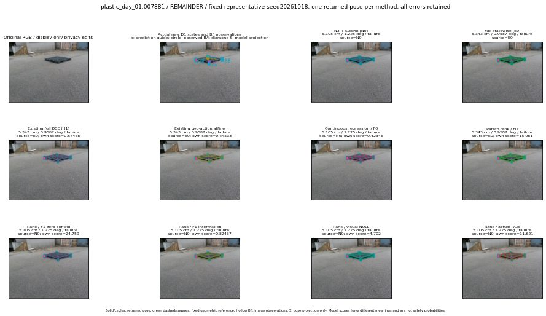

실선은 반환 자세, 초록 점선은 고정 기하 참조입니다. S는 영상 관측이 아닙니다. 점수는 모델별 의미가 다르며 보정된 안전 확률이 아닙니다. 개인정보 처리는 표시 사본에만 적용했습니다.
| 방법·seed | 위치 / 회전 / 공동성공 | 실제 출처 | 선택 후보 | 각 모델 자체 점수 |
|---|---|---|---|---|
| N0 | 5.105 cm / 1.225 deg / failure | N0 | N/A | N/A |
| E0 | 5.343 cm / 0.9587 deg / failure | E0 | N/A | N/A |
| E0_REGENERATED | 5.343 cm / 0.9587 deg / failure | E0 | E0_REGENERATED | N/A |
| POSEFIX_SUBPIX_PF_ANCHOR | 5.036 cm / 1.175 deg / failure | OTHER | N/A | N/A |
| POSEFIX_SUBPIX_YOLO_ANCHOR | 5.036 cm / 1.175 deg / failure | OTHER | N/A | N/A |
| D1_H1_MLP_s20261018 | 5.343 cm / 0.9587 deg / failure | E0 | E0_REGENERATED | 0.5746841430664062 |
| D1_H1_MLP_s20261019 | 5.234 cm / 0.9355 deg / failure | OTHER | G10/ORIGINAL_WD/endpoint/11 | 0.37074652314186096 |
| D1_H1_MLP_s20261020 | 5.343 cm / 0.9587 deg / failure | E0 | E0_REGENERATED | 0.3159361183643341 |
| D1_H1_PAIR_MLP_s20261018 | 5.105 cm / 1.225 deg / failure | N0 | N0 | -0.2737604081630707 |
| D1_H1_PAIR_MLP_s20261019 | 5.105 cm / 1.225 deg / failure | N0 | N0 | -0.16171465814113617 |
| D1_H1_PAIR_MLP_s20261020 | 5.105 cm / 1.225 deg / failure | N0 | N0 | 0.3150767982006073 |
| D1_H1_PAIR_ROLE_AFFINE_s20261018 | 5.343 cm / 0.9587 deg / failure | E0 | E0_REGENERATED | 0.445330411195755 |
| D1_H1_PAIR_ROLE_AFFINE_s20261019 | 5.343 cm / 0.9587 deg / failure | E0 | E0_REGENERATED | 0.20503264665603638 |
| D1_H1_PAIR_ROLE_AFFINE_s20261020 | 5.343 cm / 0.9587 deg / failure | E0 | E0_REGENERATED | 0.22356277704238892 |
| R_CONT_F0_s20261018 | 5.105 cm / 1.225 deg / failure | N0 | N0 | 0.4234558045864105 |
| R_CONT_F0_s20261019 | 5.105 cm / 1.225 deg / failure | N0 | N0 | 0.49290138483047485 |
| R_CONT_F0_s20261020 | 5.105 cm / 1.225 deg / failure | N0 | N0 | 0.5049501061439514 |
| R_ORDER_F0_s20261018 | 5.343 cm / 0.9587 deg / failure | E0 | E0_REGENERATED | 15.08052921295166 |
| R_ORDER_F0_s20261019 | 5.105 cm / 1.225 deg / failure | N0 | N0 | 12.252272605895996 |
| R_ORDER_F0_s20261020 | 5.105 cm / 1.225 deg / failure | N0 | N0 | 0.5291706919670105 |
| R_ORDER_F1_ZERO_s20261018 | 5.105 cm / 1.225 deg / failure | N0 | N0 | 24.75855827331543 |
| R_ORDER_F1_ZERO_s20261019 | 5.234 cm / 0.9355 deg / failure | OTHER | G10/ORIGINAL_WD/endpoint/11 | 30.145957946777344 |
| R_ORDER_F1_ZERO_s20261020 | 5.105 cm / 1.225 deg / failure | N0 | N0 | 13.225732803344727 |
| R_ORDER_F1_s20261018 | 5.105 cm / 1.225 deg / failure | N0 | N0 | 0.8243746161460876 |
| R_ORDER_F1_s20261019 | 5.105 cm / 1.225 deg / failure | N0 | N0 | 9.921951293945312 |
| R_ORDER_F1_s20261020 | 5.105 cm / 1.225 deg / failure | N0 | N0 | 4.112895488739014 |
| V_ORDER_NULL_s20261018 | 5.105 cm / 1.225 deg / failure | N0 | N0 | 4.701958656311035 |
| V_ORDER_NULL_s20261019 | 5.105 cm / 1.225 deg / failure | N0 | N0 | 4.857774257659912 |
| V_ORDER_NULL_s20261020 | 5.105 cm / 1.225 deg / failure | N0 | N0 | 7.217029094696045 |
| V_ORDER_RGB_s20261018 | 5.105 cm / 1.225 deg / failure | N0 | N0 | 11.621441841125488 |
| V_ORDER_RGB_s20261019 | 5.105 cm / 1.225 deg / failure | N0 | N0 | 4.795141696929932 |
| V_ORDER_RGB_s20261020 | 5.105 cm / 1.225 deg / failure | N0 | N0 | -3.901188611984253 |